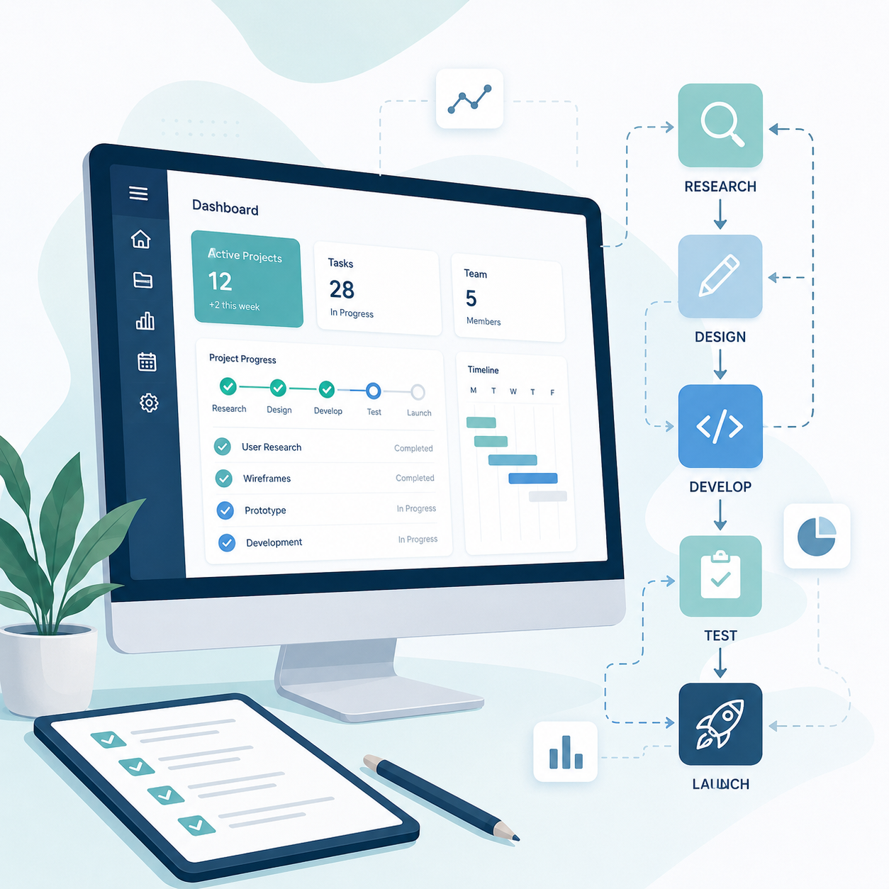

Hello.
I work at the intersection of product, data, and business operations. I enjoy understanding complex processes and turning them into clear, practical digital solutions.
My Skills & Interests

Product & Systems
I enjoy turning complex operational workflows into practical digital products. My work combines product thinking, business analysis, process design, and problem solving.
Data & Analytics
I use data to understand behavior, identify bottlenecks, support decision making, and transform information into clear business insights.
Curious by Nature
Outside of work, I enjoy technology, history, medicine, traveling, music, board games, sports, and learning how complex systems work.
Get In Touch
Let's connect.
I am always interested in thoughtful products, complex processes, data-driven ideas, and opportunities to build better systems.